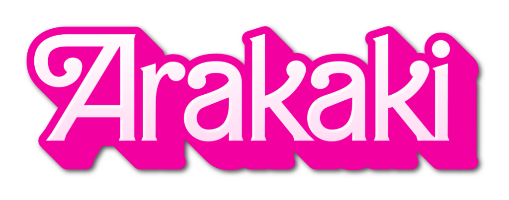

ARAKAKI AVENTURAS
Experimente a emoção das águas cristalinas do Rio Manso em Cuiabá! Oferecemos as melhores experiências de aventura com segurança e diversão garantidas.
RAFTING EXTREMO
Descida emocionante pelas corredeiras do Rio Manso com equipamentos de última geração e guias experientes.
KAYAK AVENTURA
Explore os pontos mais remotos do rio com nossos kayaks especiais para aventuras aquáticas.
TRILHAS ECOLÓGICAS
Combine aventura na água com trilhas pela mata ciliar, observando a rica biodiversidade da região.